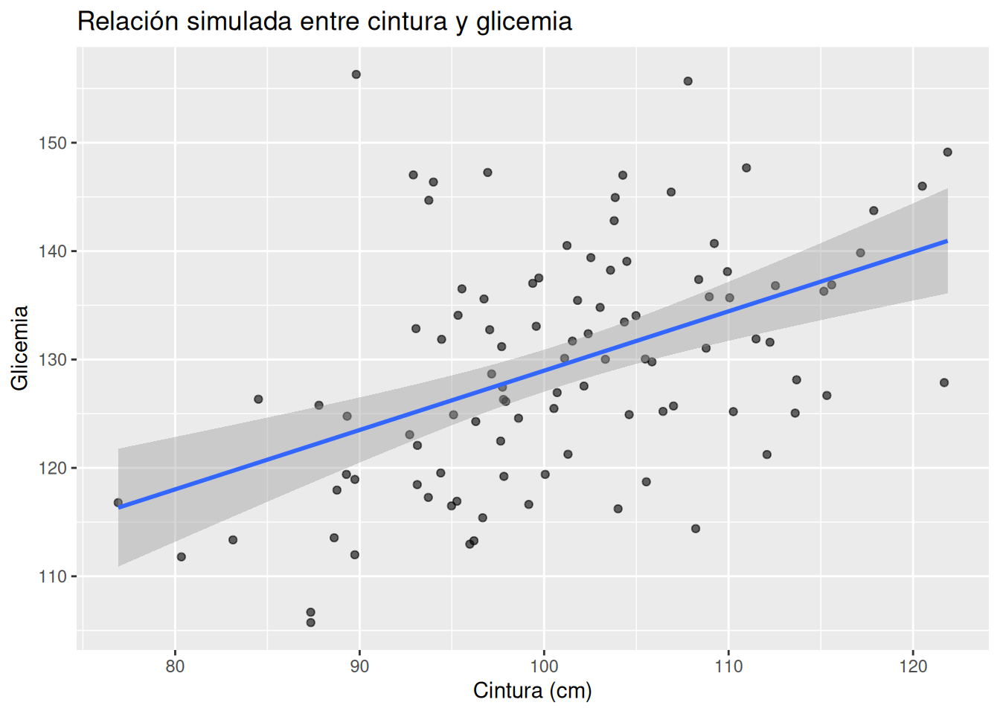

A lo largo del libro aprendimos mucho más que comandos en R o modelos estadísticos. Aprendimos una forma distinta de enfrentar la incertidumbre clínica.
Ese es el verdadero objetivo del pensamiento bayesiano.
Empezamos con datos
Al inicio del libro, NHANES podía parecer simplemente una tabla enorme llena de variables difíciles de interpretar.
IMC.
Cintura abdominal.
Glicemia.
HDL.
Triglicéridos.
Relación neutrófilos - linfocitos.
Uso de aspirina.
Presión arterial.
Pero poco a poco entendimos algo importante:
👉 los datos clínicos no son solo números
👉 representan procesos biológicos reales
Detrás de cada observación hay una persona.
Un metabolismo.
Una historia clínica.
Un conjunto de mecanismos fisiopatológicos interactuando entre sí.
Después entendimos la incertidumbre
En medicina muchas veces nos entrenan para buscar respuestas definitivas:
¿Tiene o no tiene enfermedad?
¿Este tratamiento funciona o no?
¿Este resultado es normal o anormal?
Pero la realidad clínica rara vez es tan simple.
Un paciente puede tener glicemia normal y aun así presentar resistencia a la insulina.
Otro puede tener obesidad sin desarrollar diabetes durante años.
Otro puede mejorar clínicamente aunque algunos biomarcadores cambien poco.
La medicina real ocurre en zonas grises.
Y justamente ahí es donde el enfoque bayesiano resulta tan útil.
Aprendimos a pensar en probabilidades
El pensamiento bayesiano cambia una idea fundamental:
Antes:
la incertidumbre parecía un problema
Ahora:
entendemos que la incertidumbre es parte natural de la medicina
No siempre podemos saber algo con certeza absoluta.
Pero sí podemos:
estimar rangos plausibles
actualizar nuestras creencias con nueva evidencia
tomar decisiones razonables bajo incertidumbre
Ese cambio de mentalidad es enorme.
Construimos modelos
A lo largo del libro usamos modelos simples, pero muy poderosos conceptualmente.
Aprendimos que un modelo es una herramienta para pensar.
No es “la verdad”.
No es una representación perfecta del cuerpo humano.
Es una aproximación útil.
Por ejemplo:
modelamos la relación entre IMC y glicemia
exploramos cintura abdominal y riesgo metabólico
analizamos HDL como marcador dinámico del estado metabólico
utilizamos aspirina como proxy indirecto de inflamación
Cada modelo intentaba capturar una pequeña parte de un sistema biológico mucho más complejo.
Y eso es exactamente lo que ocurre en investigación clínica real.
También aprendimos algo importante:
los modelos pueden equivocarse
Este es uno de los aprendizajes más valiosos del libro.
Un modelo puede:
simplificar demasiado
ignorar variables importantes
confundirse por asociaciones espurias
verse afectado por sesgos de selección
reflejar limitaciones de los datos
Por eso el pensamiento bayesiano no consiste en “creer ciegamente” en los resultados.
Consiste en:
cuestionar
comparar
actualizar
interpretar críticamente
Qué significa pensar como analista bayesiano
Pensar como analista bayesiano significa:
1. Pensar en distribuciones, no en valores únicos**
En lugar de preguntar:
“¿Cuál es el valor correcto?”
Empezamos a preguntar:
“¿Qué valores son plausibles dados los datos?”
Ese pequeño cambio transforma completamente la interpretación clínica.
2. Aceptar la incertidumbre
La incertidumbre no desaparece porque hagamos un análisis sofisticado.
Simplemente aprendemos a describirla mejor.
Y eso mejora la toma de decisiones.
3. Actualizar creencias con evidencia
Antes del análisis ya tenemos conocimiento previo:
fisiología
experiencia clínica
literatura científica
contexto del paciente
Luego llegan los datos.
El análisis bayesiano combina ambas cosas:
conocimiento previo
evidencia observada
Eso se parece mucho más al razonamiento clínico real.
4. Cuestionar constantemente los resultados
Un analista bayesiano no pregunta solamente:
“¿El modelo encontró algo?”
También pregunta:
¿Tiene sentido biológico?
¿Podría existir confusión?
¿Faltan variables importantes?
¿La asociación es causal o solo observacional?
¿Los datos son suficientemente buenos?
Ese pensamiento crítico es más importante que cualquier software.
2. Ejemplo simple (simulación conceptual en R)
Este capítulo no busca introducir nuevos modelos.
Pero sí vale la pena mostrar cómo cambió nuestra manera de interpretar resultados.
Imaginemos este escenario clínico simplificado:
Un médico observa que pacientes con mayor cintura abdominal tienden a tener glicemias más altas.
Antes del enfoque bayesiano podría pensar:
“Entonces la relación es verdadera o falsa”.
Ahora pensamos distinto:
“¿Qué tan plausible es esa relación?”
“¿Qué tan incierta es?”
“¿Qué otras explicaciones podrían existir?”
Incluso un modelo simple puede ayudarnos a visualizar esto.
set.seed(123)# Simular 100 pacientes con las variables de cintura y glicemiadatos <-tibble(cintura =rnorm(100, mean =100, sd =10),glicemia =70+ cintura *0.6+rnorm(100, 0, 10))# Diagrama de dispersión que relaciona la cintura y la glicemiaggplot(datos, aes(cintura, glicemia)) +geom_point(alpha =0.6) +geom_smooth(method ="lm", se =TRUE) +labs(title ="Relación simulada entre cintura y glicemia",x ="Cintura (cm)",y ="Glicemia" )

El punto importante no es la línea exacta.
El punto importante es entender:
tendencia
variabilidad
incertidumbre
plausibilidad biológica
Eso resume gran parte del pensamiento bayesiano aplicado.
3. Reflexión aplicada con NHANES
A lo largo del libro usamos NHANES como un laboratorio clínico y epidemiológico.
No para buscar “verdades absolutas”.
Sino para aprender a razonar con datos reales.
El ejemplo del IMC y la glicemia
Uno de los hallazgos más interesantes apareció cuando analizamos:
IMC
glicemia
cintura abdominal
Inicialmente parecía existir una relación positiva relativamente esperada:
mayor IMC
mayor glicemia
Pero al controlar indirectamente por cintura abdominal similar, la tendencia cambió.
Eso nos obligó a pensar más profundamente.
Tal vez:
el IMC no captura adecuadamente la adiposidad visceral
la distribución de grasa importa más que el peso total
existen subgrupos metabólicamente distintos
la fisiopatología es más compleja de lo que parece inicialmente
Ese momento representa perfectamente el valor del análisis bayesiano:
👉 no quedarse solo con la primera asociación observada
El HDL como marcador dinámico
Otro aprendizaje importante fue dejar de interpretar el HDL como una variable aislada y estática.
Empezamos a verlo como:
marcador metabólico dinámico
posible reflejo del estado inflamatorio
indicador indirecto de sensibilidad a la insulina
Eso cambia completamente la interpretación clínica.
Porque los biomarcadores no existen separados de la fisiología.
Forman parte de sistemas interconectados.
Aspirina como proxy de inflamación
También exploramos el uso de aspirina como aproximación indirecta a fenómenos inflamatorios y riesgo cardiovascular.
Esto fue especialmente importante para entender algo fundamental:
👉 muchas veces en análisis clínico trabajamos con proxies imperfectos
Los datos reales rara vez son ideales.
A veces:
faltan variables
las mediciones son incompletas
los indicadores son indirectos
Y aun así debemos tomar decisiones.
4. Interpretación clínica y cierre final
Cómo cambia esto la práctica médica
El pensamiento bayesiano no reemplaza la medicina clínica.
La fortalece.
Porque ayuda a:
integrar evidencia
manejar incertidumbre
evitar conclusiones absolutas
interpretar resultados en contexto
Diagnóstico
En la práctica real, el diagnóstico rara vez es completamente binario.
Muchas veces trabajamos con probabilidades:
probabilidad pretest
probabilidad postest
factores de riesgo
contexto clínico
El enfoque bayesiano se adapta naturalmente a esta realidad.
Evaluación de riesgo
La obesidad no es simplemente exceso de peso.
Es un fenómeno metabólico complejo.
Dos pacientes con el mismo IMC pueden tener riesgos completamente distintos:
distinta distribución de grasa
diferente inflamación
distinta sensibilidad a la insulina
diferente función hepática
distinto contexto genético y ambiental
Por eso el análisis probabilístico resulta tan importante.
Toma de decisiones
En medicina casi nunca tenemos información perfecta.
Debemos decidir aun con incertidumbre.
Y eso no es un defecto del sistema.
Es la naturaleza misma de la práctica clínica.
El objetivo no es eliminar la incertidumbre.
El objetivo es:
👉 tomar mejores decisiones a pesar de ella
Limitaciones del análisis realizado
Este punto es extremadamente importante.
NHANES es observacional
Gran parte del análisis del libro utilizó datos observacionales.
Eso significa que:
encontramos asociaciones
exploramos patrones
identificamos relaciones plausibles
Pero:
👉 no demostramos causalidad directa
Existen variables no medidas
Siempre pueden existir factores que no fueron incluidos:
sueño
estrés
dieta detallada
genética
microbiota
actividad física real
medicación no registrada
Eso limita cualquier modelo.
Los modelos simplifican la realidad
Todos los modelos simplifican.
Necesariamente.
El cuerpo humano es muchísimo más complejo que cualquier ecuación estadística.
Por eso debemos recordar siempre:
“Un modelo no es la realidad, es una aproximación”.
Siguientes pasos
Este libro es un punto de partida.
No un punto final.
1. Profundizar en análisis bayesiano
Más adelante puedes explorar:
modelos multinivel más complejos
interacciones más sofisticadas
modelos longitudinales
mejores priors
validación predictiva
Incluso eventualmente:
brms
Stan más avanzado
modelos causales probabilísticos
Pero ahora ya tienes la base conceptual más importante.
2. Profundizar en pensamiento causal
Uno de los pasos más valiosos será estudiar:
DAGs
confusión
mediación
sesgo de selección
inferencia causal
Porque muchas asociaciones clínicas pueden interpretarse incorrectamente si no pensamos causalmente.
3. Explorar más datos
NHANES tiene muchísimas variables aún por explorar:
dieta
sueño
salud mental
función hepática
marcadores inflamatorios
actividad física
Y después puedes continuar con:
MIMIC
UK Biobank
datasets hospitalarios
registros clínicos propios
4. Aplicación práctica
El análisis de datos clínicos puede transformarse en herramientas reales:
dashboards clínicos
apps en Shiny
reportes automatizados
sistemas de apoyo a decisiones
monitoreo metabólico
La programación puede convertirse en una extensión del razonamiento clínico.
5. Comunicación y educación
Saber analizar datos no es suficiente.
También debemos aprender a comunicar.
Puedes:
crear un blog en Quarto
publicar visualizaciones
escribir artículos educativos
enseñar a otros médicos
compartir análisis reproducibles
La comunicación clara mejora la medicina.
Reflexión final
La obesidad es mucho más compleja que una simple acumulación de grasa.
A lo largo del libro vimos cómo interactúan:
insulina
inflamación
adiposidad visceral
metabolismo hepático
riesgo cardiovascular
Y probablemente todavía estamos viendo solo una pequeña parte del sistema completo.
Pero incluso modelos simples pueden ayudarnos a pensar mejor.
Y pensar mejor puede conducir a decisiones clínicas más razonables.
El mensaje más importante del libro
Los datos no reemplazan el juicio clínico.
👉 Lo mejoran.
El análisis bayesiano no busca convertir al médico en una máquina estadística.
Busca ayudarlo a:
razonar mejor
interpretar mejor
cuestionar mejor
decidir mejor
Cierre final al lector
Si llegaste hasta aquí, ya aprendiste algo muy valioso.
Aprendiste a mirar los datos clínicos de otra manera.
Aprendiste que:
la incertidumbre no es enemiga
los modelos son herramientas imperfectas
las probabilidades pueden ayudar a decidir
la fisiopatología importa
los datos necesitan contexto clínico
Y quizás lo más importante:
👉 aprendiste una forma de pensar, no solo una herramienta
Ese aprendizaje puede acompañarte mucho más allá de NHANES, mucho más allá de R y mucho más allá de este libro.
Ahora tienes una base sólida para:
seguir explorando
construir nuevos modelos
analizar tus propios datos
cuestionar evidencia
mejorar decisiones clínicas
La curiosidad científica y el pensamiento crítico probablemente serán siempre más importantes que cualquier software específico.
Sigue preguntando.
Sigue explorando.
Sigue actualizando tus creencias con evidencia.
Eso, en esencia, es pensar como analista bayesiano.